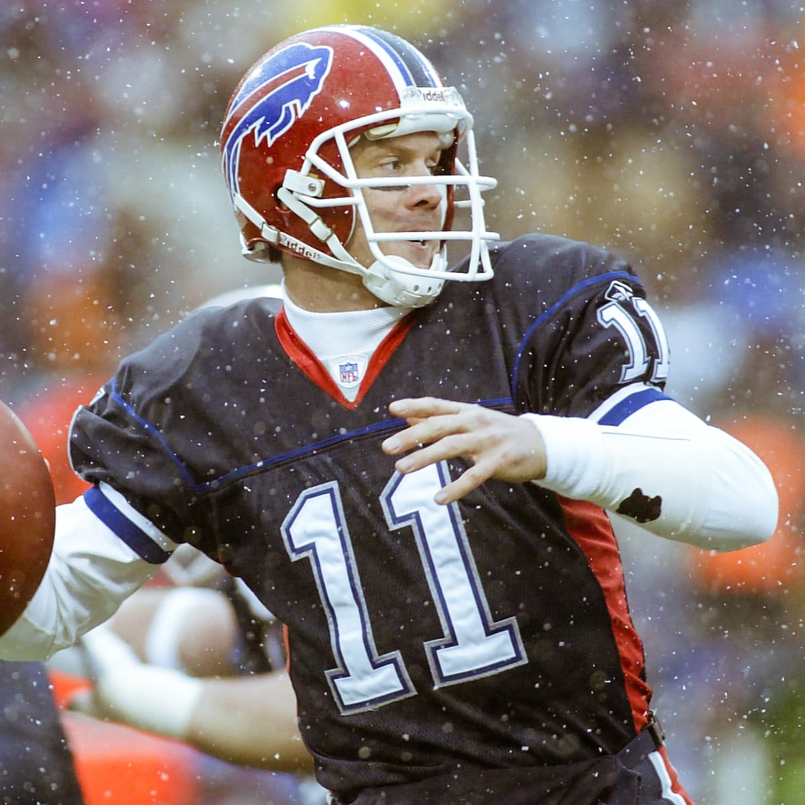

The 2000s for the Bills were defined by the playoff drought. The 2001 and 2002 teams were abysmal, but things looked a little better with the signing of quarterback Drew Bledsoe in 2002. They finished the season at 8-8, but still managed to place last in the division. In 2003, the Bills started with a few strong wins, but stumbled for the rest of the season, and finished 6-10. After that year, the Bills quarterback struggles started, with attempts from mutilpe replacements failing, leading to more and more losing seasons. With some signings and draft picks, things started looking up towards the end of the decade.
The 2000s